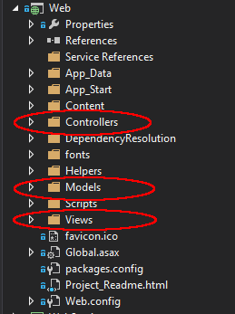
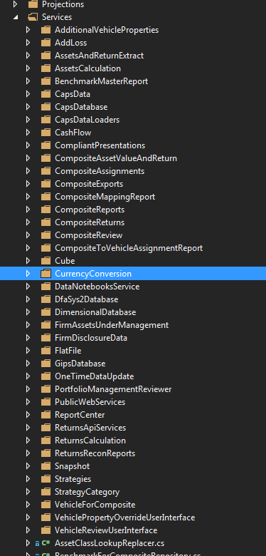

Improving Code
Tips on Improving Code
Agenda
- Look at code and talk.
- Start with "YUGE" concepts then moved to smaller ones.
We are all learning.
Returns 2 Code
- Over 10 Years Old
- "Tremendous" Business Value
Immutability
In object-oriented and functional programming, an immutable object (unchangeable object) is an object whose state cannot be modified after it is created.
-- Wikipedia
Mutable Example
Immutable Example
But we HAVE to change values!
Immutable with Calculation Example
Immutability makes your code easier to reason about.
Returns 2 vs. Returns Web
Returns Web Service
Immutability Tips
- Maximize Immutability - Minimize Mutability
- Separate Mutable and Immutable Objects
Inheritance
Good OOP != Inheritance
Good OOP == Composition
Highest form of Coupling
Inheritance Example
Composition Example
Investor Reporting Story
"Favor object composition over class inheritance."
"Why is inheritance EVEN built into the language?"
-- Gomti Mehta (Former Dimensional Employee)

Organizing Code
ASP MVC
Group by Business
Benefits
- Matches Language of the Business
- Easier for New Engineers
More Info
Domain-Driven Design Fundamentals
Side Effects
Problem
Solution
aka
Artificial Coupling
Switch Statements
Problem
Shotgun Surgery
Strategy Pattern
Solution
Return 2
RTComputeDef Line - 53
Data Clumps
Problem
Code Smell
Data Clumps
Solution
Return 2
dtStart
Interface Segregation Principal
Problem
Solution
Agile Principles, Patterns, and Practices
Boolean Flags
Problem
Solution
Return 2
PatchSelectSeries